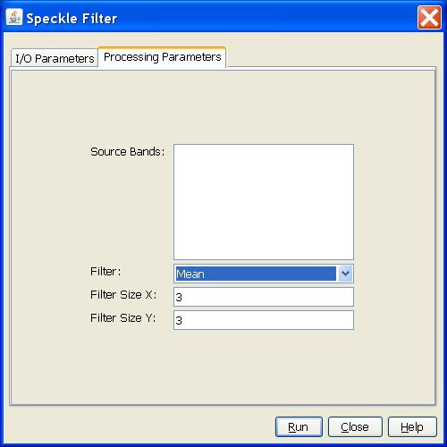
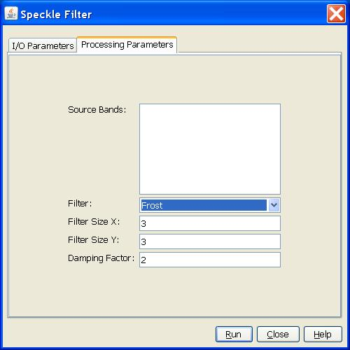

Speckle Filter Operator
SAR images have inherent salt and pepper like texturing called speckles which
degrade the quality of the image and make interpretation of features more
difficult. Speckles are caused by random constructive and destructive interference
of the de-phased but coherent return waves scattered by the elementary scatters
within each resolution cell. Speckle noise reduction can be applied either by
spatial filtering or multilook processing.
Filters Supported
The operator supports the following
speckle filters for handling speckle noise of
different distributions (Gaussian, multiplicative or
Gamma):
- Mean
- Median
- Frost
- Lee
- Refined Lee
- Gamma-MAP
Parameters Used
For most filters, the following parameters should be selected (see figure 1 for example):
- Source Band: All bands (real or virtual) of the source product. User can
select one or more bands for producing filtered images. If no bands are
selected, then by default all bands will be selected. For complex product,
only the intensity band can be selected.
- Filter: The speckle filter.
- Size X: The filtering kernel width.
- Size Y: The filtering kernel height.
- Frost Damping Factor: The damping factor for Frost filter.

Figure 1. Dialog box for Mean filter.
For Frost filter, one extral parameter should be selected (see figure 2):
- Frost Damping Factor: The damping factor for Frost filter.

Figure 2. Dialog box for Froster
filter
For Refined Lee filter, the following parameter should be selected (see Figure 3):
- Edge Threshold: A threshold for detecting edges. Area of 7x7
pixels with local variance lower than this threshold is considered flat
and normal Local Statistics Filter is used for the filtering. If
the local variance is greater than the threshold, then the area is
considered as edge area and Refined Lee filter will be used for the
filtering.

Figure 3. Dialog box for Refined Lee filter.
Reference:
[1] J. S. Lee, E. Pottier, Polarimetric SAR Radar Imaging: From Basic to Applications, CRC Press, Taylor & Francis Group, 2009.
[2] G. S. Robinson, “Edge
Detection by Compass Gradient Masks”, Computer Graphics and Image
Processing, vol. 6, No. 5, Oct. 1977, pp 492-502.
[3]
V. S. Frost, J. A. Stiles, K. S. Shanmugan, J. C. Holtzman, \A Model
for Radar Images and Its Application to Adaptive Digital Filtering of
Multiplicative Noise", IEEE Transactions on Pattern Analysis and
Machine Intelligence, Vol. PAMI-4, pp. 157-166, 1982
[4] Mansourpour M., Rajabi M.A., Blais J.A.R., “Effects and Performance
of Speckle Noise Reduction Filters on Active Radar and SAR Images”, http://people.ucalgary.ca/~blais/Mansourpour2006.pdf